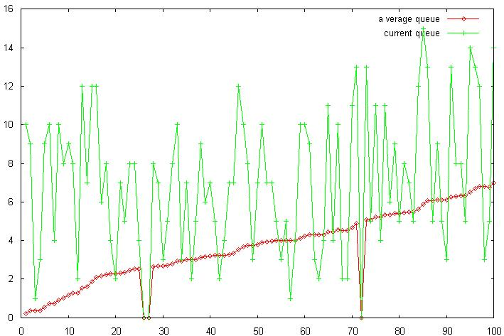
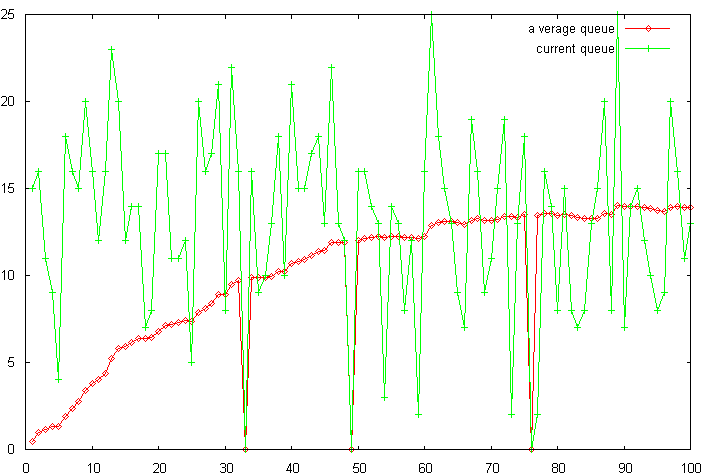
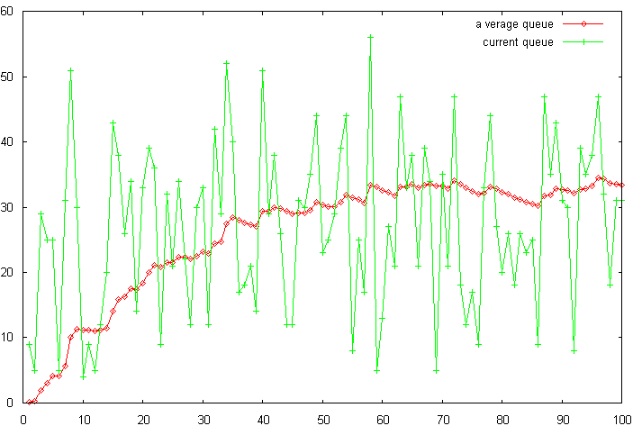

Congestion Avoidance with Random Early Detection in
Packet Switching Gateways : A Generic Simple Simulator
by
Mehmet A. Suzen
Email : mehmet.suzen@physics.org
0. Introduction
In this small project aiming to introduce and make short investigation on one of the most efficient congestion algorithm called Random Early Detection (RED) in packet switching networks. I have found this type of queuing strategy while working in the Internet Service Provider [0] to reduce effects of high load in the high end router, in Cisco Systems web site and I found some supporting articles [1] to realize this small term project.
Briefly, basic constituent of communication in computer networks is packets. And to carry (route) those packets over different networks we need gateways, which are nothing but an end point in the graph which regulates and forwards packets between source and destination networks. Using simple queuing for arriving packets into gateway such as first in first out (FIFO) may not be convenient for busy networks that have a congestions or high traffic load, at least for the packet switching purposes.
Written code is based on the paper [1], and an improvement is simulation code can handle arbitrary number of hosts that max packet rate pre-determined in an input file for a particular host.
1. Congestion Avoidance Algorithm
Algorithm given in [1] has been implemented in C with improvements in generic manner. For the sake of simplicity only packet rated per second for hosts that connected to the gateway considered. Here is the modified-algorithm that is implemented in a simple C code;
Read in Network packet rates
Loop time steps
Randomly decide which hosts are sending packets
initilization
avg =0
count=1
for each packet arrival
if avg != 0
avg=(1-wq)avg+wq q
else
m=t-q_t
avg=(1-wq)^m avg
end if
keep tract of avg
if minth <= avg < maxth
count ++
pb=maxp(avg-minth)/(maxth-minth)
pa=pb/(1-count pb)
with pa
drop the arriving packet
keep track of drops
count=0
else if maxth <= avg
drop the arriving packet
count=0
else
count=-1
if q= =0
q_time=time
Description of symbols;
avg= average queue size
q_time=start of the queue idle time
count=packet since last droped packet
wq= queue weight
minth=minimum threshold for queue
maxth=maximum threshold for queue
maxp=maximum value for pb
pa= current packet marking probability
q=current queue size
time=current time
2.Simulation Code
Simulation code has been written in ANSI C using gcc compiler on XP. Complete code is given in 2.1. Input file “network.ntw” contains a coloumn which the first number indicated number of host connected to this gateway, rest of the numbers are packet rates of each host per second. Output files are “traffic.ntw”, “hostdrops.ntw” and “queues.ntw”.Output file traffic.ntw : contains coloumns at which time hosts sends packets which is randomly determined during simulation. Hostdrops file gives information that at what times packets are drop from a particular host. And finally queues file gives time evolution of average queue size and the actual queue size.
2.1 Complete Code
/*
Simple generic RED gateway simulator
by
Mehmet Ali Suzen
mehmet@suzen.net
January 2005,
Famagusta, Cyprus
(c) 2005
General Public License
*/
#include <stdlib.h>
#include <stdio.h>
/* Prototypes */
/*************************************/
int main();
void get_randoms(int *numbers, int upper);
void get_bin_randoms(int *numbers2, int upper);
int read_network(int *hostrate);
/*************************************/
int main()
{
FILE *fp1,*fp2,*fp3;
int i,j,q,numhost,count,minth,maxth,time,simtime,m,qtime,*q_time;
int *nran,*nran2,*hostrate,**hostdrops,zero,rcount;
char line1[90];
double wq,avg,maxp,pa,pb,*avg_time;
zero=0;
numhost=0;
simtime=100;
wq=0.002;
minth=5;
maxth=15;
maxp=0.02;
printf(" \n");
printf(" Simple genericRED gateway simulator \n");
printf(" \n");
hostrate=(int *) malloc(sizeof(int));
numhost=read_network(hostrate);
avg_time=(double *) malloc(simtime*sizeof(double));
q_time=(int *) malloc(simtime*sizeof(int));
nran=(int *) malloc((simtime+1)*(numhost+1)*sizeof(int));
nran2=(int *) malloc((numhost+1)*sizeof(int));
hostdrops=(int **) malloc((simtime+3)*sizeof(int));
for(i=0;i<=simtime;i++){
hostdrops[i]=(int *) malloc((numhost+3)*sizeof(int));
}
for(i=1;i<=numhost;i++) {
printf("%d th hostrate = %d packets/second \n",i,hostrate[i]);
}
/* initilize hostdrops and avg_time */
for(time=0; time <= simtime; time++) {
avg_time[time]=0;
for(i=0;i<=numhost;i++) {
hostdrops[time][i]=0;
}
}
/* core RED algorithm */
avg=0;
count=-1;
qtime=0;
fp3=fopen("traffic.ntw","w");
/* Find current queue size or hosts sending packet */
rcount=0;
/* randomly pick which hosts are sending packets*/
get_bin_randoms(nran,(numhost+1)*(simtime+1));
for(time=1;time<=simtime; time++) {
q=0;
sprintf(line1,"%d ",time);
for(i=1;i<=numhost;i++) {
nran2[i]=nran[rcount];
/* printf("count nran2=%d\n",nran2[i]); */
if(nran[rcount] == 1) {
q=q+hostrate[i];
sprintf(line1,"%s%d ",line1,hostrate[i]);
} else {
sprintf(line1,"%s%d ",line1,zero);
}
rcount++;
}
fprintf(fp3,"%s\n",line1);
q_time[time]=q;
/* loop over each host sending packet */
for(i=1;i<=numhost;i++) {
/* printf("here nran2=%d\n",nran2[i]); */
if(nran2[i] == 1) {
for(j=1;j<=hostrate[i];j++) {
if(q != 0) {
avg=(1-wq)*avg+wq*q;
avg_time[time]=avg;
} else {
m=time-qtime;
avg=pow((1-wq),m)*avg;
avg_time[time]=avg;
}
if(minth <= avg && avg < maxth ) {
count++;
pb=maxp*(avg-minth)/(maxth-minth);
pa=pb/(1-count*pb);
if(pa >= 0.015) {
hostdrops[time][i]++;
count=0;
}
}
if(maxth <= avg) {
hostdrops[time][i]++;
count=0;
} else {
count=-1;
}
if(q ==0) {
qtime=time;
}
}
}
}
}
close(fp3);
/* Report Host Drops */
fp1=fopen("hostdrops.ntw","w");
for(time=1; time < simtime; time++) {
sprintf(line1,"%5d",time);
for(i=1;i<=numhost;i++) {
sprintf(line1,"%s %5d",line1,hostdrops[time][i]);
}
fprintf(fp1,"%s\n",line1);
}
close(fp1);
/* Report average and current queue size */
fp2=fopen("queues.ntw","w");
for(time=1; time <= simtime; time++) {
fprintf(fp2,"%d %f %d\n",time,avg_time[time],q_time[time]);
/* printf("time=%d avg_time=%f\n",time,avg_time[time]); */
}
close(fp2);
/* Free Dynamic Arrays */
free(nran);
free(hostrate);
free(hostdrops);
free(avg_time);
free(q_time);
exit(0);
}
/**********************************************************
RED simulator Functions
**********************************************************/
/* Get random squence over upper*/
void get_randoms(int *numbers, int upper) {
int i,where;
srand( (unsigned int)time( NULL ) );
for(i =upper-1; i > 0; i -= 1 ){
numbers[i] = rand() % i;
/* printf("numbers=%d i=%d \n",numbers[i],i);*/
}
}
/* Get random squence of 1s and 0s of uppers*/
void get_bin_randoms(int *numbers2, int upper) {
int i,where;
srand( (unsigned int)time( NULL ) );
for(i =0; i < upper; i++ ){
where=rand();
/* printf("where = %d\n",where) */;
numbers2[i] = where % 2;
}
}
/* Read Network Data */
/* First line number of hosts */
/* other lines packets/sec perline */
int read_network(int *hostrate) {
FILE *fp;
int i,numhost;
char line[4];
fp=fopen("network.ntw","r");
i=0;
while(!feof(fp)) {
if(i == 0) {
fscanf(fp,"%s",line);
realloc(hostrate,2*sizeof(int));
sscanf(line,"%d",&numhost);
/* printf("numhost=%d \n",numhost); */
} else {
fscanf(fp,"%s",line);
realloc(hostrate,sizeof(int)+i*sizeof(int));
sscanf(line,"%d",&hostrate[i]);
}
i++;
}
if(numhost >= i) {
printf("missing host in network.ntw \n");
exit(0);
}
close(fp);
return numhost;
}
3. Investigation & Simulated Network
According to reference [1] some fixed parameters are used as follows; wq=0.002, minth=5, maxth=15 and maxp=1/50. There was 6 hosts in these simulations and three different states. At low, mid-range and busy traffic compare to maximum average queue size limit given above as maxth. Output files and other relavant files are given in the CD
With this report. [4]
3.1 Low Traffic
Hostrates used here are 2,5,3,2,2,1 packets per second for 6 hosts. After simulating 100 time step. Queues appear like this;

Current queue size fluctuates between 1 to 15 packets which is in the range. There is no host drops for this configuration. Average queue size is saturated around 8 packets/sec.
3.2 Mid-Range Traffic
Hostrates used here are 5,7,3,6,2,4 packets per second for 6 hosts. After simulating 100 time step. Queues appear like this;

Current queue size fluctuates between 1 to 25 packets which is sometimes higher then the maximum threshold which leads to some drops. Average queue size is saturated around 13 packets/sec.
3.3. Busy Traffic
Hostrates used here are 12,9,4,8,5,18 packets per second for 6 hosts. After simulating 100 time step. Queues appear like this;

Current queue size fluctuates between 4 to 55 packets which is quite higher then the maximum threshold which leads to extreme drops. Average queue size is saturated around 30 packets/sec.
4. Discussions
Investigation of RED strategy for the congested gateways demonstrates a probabilistic drops based on average queue size leads to more fair traffic distribution and avoids congestion on the gateway. A simple simulator designed and implemented from a very general description of the algorithm given in [1]. Traffic originating from hosts connected to gateway randomly picked to generate traffic in a given rate. Results shown that even
for the high traffic RED algorithm regulates average queue size around the certain value
which implies a saturation. An improvement of the RED which called weighted RED
is a bit more complicated and needs more elaborate and detailed work.
References
[0] Kibris.Net Internet Services, Nicosia, Cyprus
[1] Sally Floyd, Van Jacobson August 1993 IEEE/ACM Transactions in Networking
[2] Andrew S. Tanenbaum, Computer Networks, 3rd Edition Prentice-Hall
[3] C Programming Language , Dennis Ritchie and Brian W. Kernighan
[4] CD contains this document, outputs of test examples, source code, compiled binary and the reference [1]